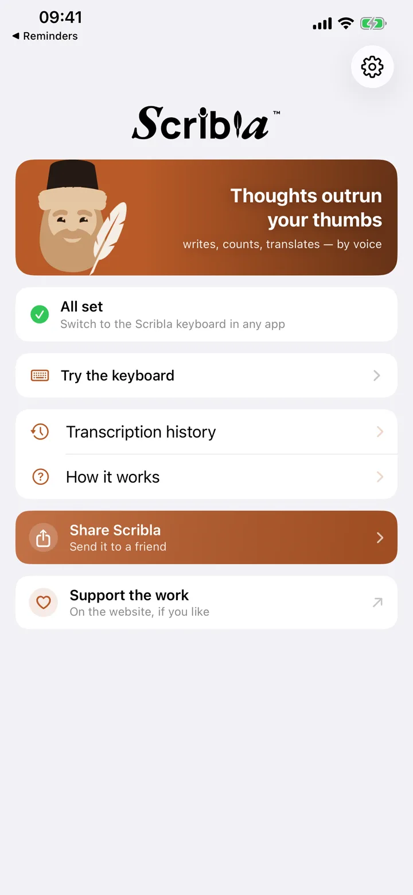
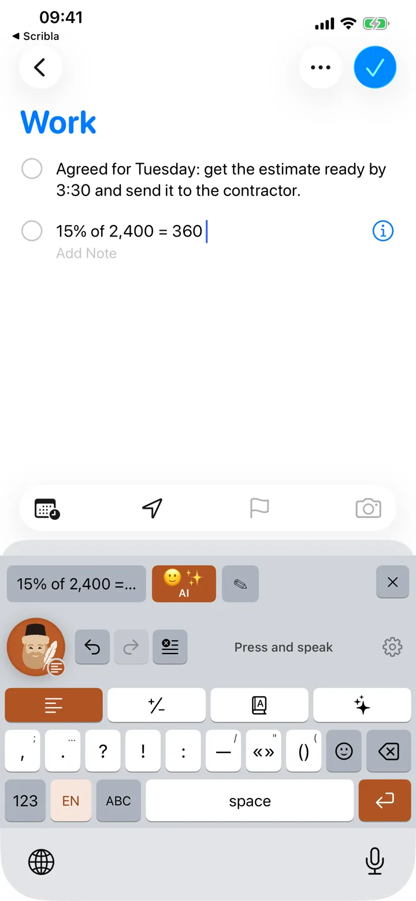
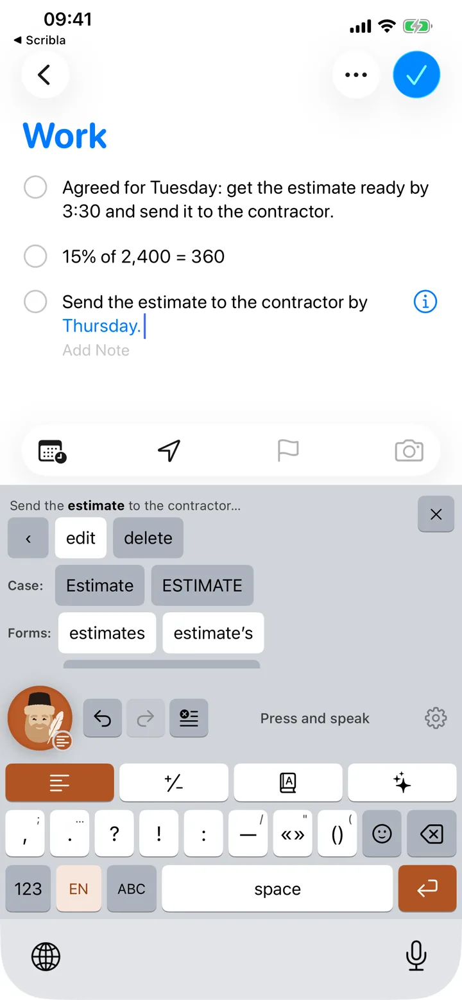
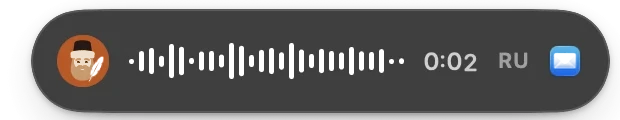
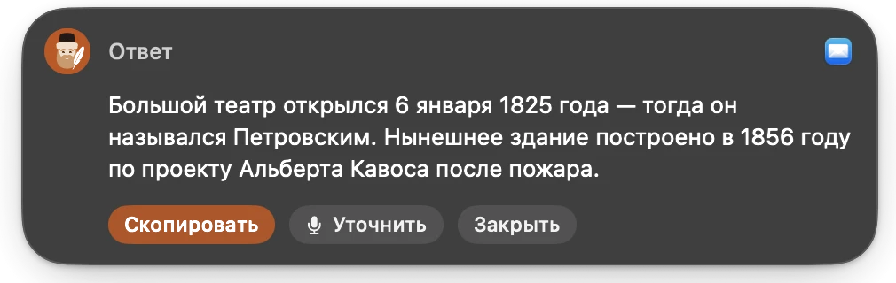

说出口，字已在输入框里
iPhone 与 Mac 上的语音输入：标点自动加好，「呃」自动去掉，还能算数、翻译、回答问题。免费，声音不离开设备。
Scribla 只在 iPhone 和 Mac 上运行
用手机打开 App Store，或用相机对准二维码。
四种模式，模式决定输入框里出现什么
选好的模式会一直保持，直到你换掉它：不用说「算一下」或「翻译」。
- 文字 你说呃 阿依达 早上好 非常感谢 输入框里阿依达，早上好！非常感谢。
- 算数 你说两千四百的百分之十五 输入框里360
- 翻译 你说文件已收到，周五前回复 输入框里The documents have been received, we will reply by Friday.
- AI 你说回复说周四不行，建议周五 输入框里很抱歉，周四不方便。建议把会议改到周五。
「听起来像 → 写成」词典一次改好名字和术语：把「恩迪诶」纠正一次，以后永远是 NDA。
三步，第一步只做一次
-

启用键盘
设置 → 通用 → 键盘 → 键盘 → Scribla。一分钟，以后不用再管。
-

点一下书吏
在任何输入框里：聊天、邮件、备忘录、搜索。键盘上那位留胡子的书吏就是录音键。
-

开口说
文字自己落进输入框。听错了一个词？旁边就是修改栏：只改那个词，不用重说整句。
在 Mac 上，一个键做同样的事
菜单栏里一个图标。按住右侧 ⌘ 说话，文字落在任何窗口的光标处。⌘ + ⌥ 是回答你说的话；再加 / 是翻译。
- 映像已由 Apple 签名并公证：双击即可打开
- Apple 芯片与 Intel，macOS 14 及以上
- 听写和词典离线可用；回答和翻译由模型完成
映像的 SHA-256: 21d193c0d73ece315edb727280fd067b8185700b46a2a1cd44bed7826f274c61


声音不离开设备
在设备上识别
听的是你的手机或 Mac。录音不会离开设备，服务器也没有东西可存。
AI 模式下会发出什么
只有问题的文字：发到 scribla.io，再转给模型。问题和答案都不保存。这些模式可以在设置里关掉。
没有账号，没有广告
无需注册，不要银行卡，没有跟踪器。本网站也没有会话录制。
常见问题
要多少钱？
目前一分不要，全部开放，用到 AI 的模式也一样：回答、上网搜索和润色都在内。密钥是我们的，模型的账单寄给我们；不订阅、不注册、不用银行卡。以后会不会有收费的部分，之后再看实际情况决定：首先得弄清楚，除了我们自己，Scribla 对别人是不是真的有用。真到了那一天，我们会提前说，而不是在开始收费的那天早上才说。
比系统自带的听写好在哪里？
系统自带的也能替你写。Scribla 在这之上，去掉「呃」和重复，记住你自己的人名和术语词典，会算术、会翻译、会回答问题——而且都在你正在写的输入框里，不用跑去别的应用。四种语言在本机识别，没网也行；在 Mac 上，任何窗口都听得见它的按键。而且它有一位书吏。
键盘要求完全访问权限，这安全吗？
完全访问权限只用于一件事：从共享容器里读取识别好的文字，那是 Scribla 应用自己放进去的。iOS 没有别的办法把文字送进键盘。键盘本身不联网，也不会读你用普通按键打的字。
Mac 版和手机版有什么不一样？
差别在于怎么叫它出来。在手机上 Scribla 是一个键盘：切换过去，点一下书吏。在 Mac 上它是菜单栏里的应用，在任何窗口都能听见右侧 ⌘，不用切换到别处。识别、口语整理、词典和用到 AI 的模式都是同一套。Mac 上没有表情面板，也没有逐词修改栏：那里你有一副真正的键盘。
它不会自己检查更新：新版本会出现在这里。
需要联网吗？
语音输入、整理口语、替换词典和算术都在手机上完成。翻译也一样——只要语言包已经下载；没下载就会走网络。剩下要联网的是汇率、AI 的回答和文字润色。
有些功能用不了
常见故障——麦克风、完全访问权限、输入框是空的—— 都收在帮助页（英文）。如果那里没有你的情况，请写信： dev@scribla.io。
哪里要改，缺了什么
Scribla 由一个小团队做，里面几乎每一样东西都是从某个人的抱怨里来的。不用客气—— 简短而带火气的意见，比礼貌而笼统的有用得多。
如果 Scribla 帮到了你
应用是免费的，也没有人出钱支持这项工作，我们利用业余时间在做。给我们打赏不是购买：它不会在应用里解锁任何东西，之后也不要求你做任何事。收据里附三张书吏主题的手机壁纸。